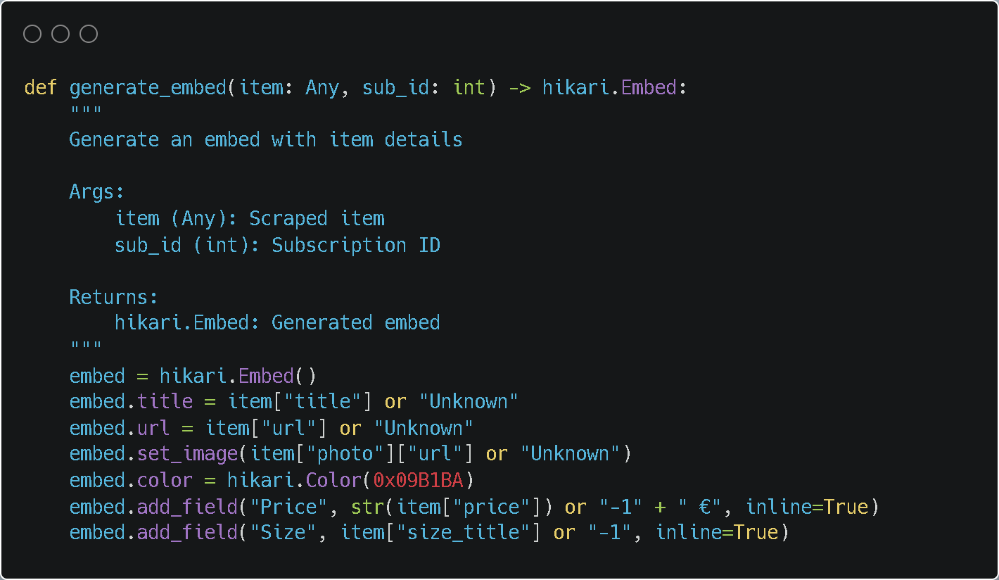
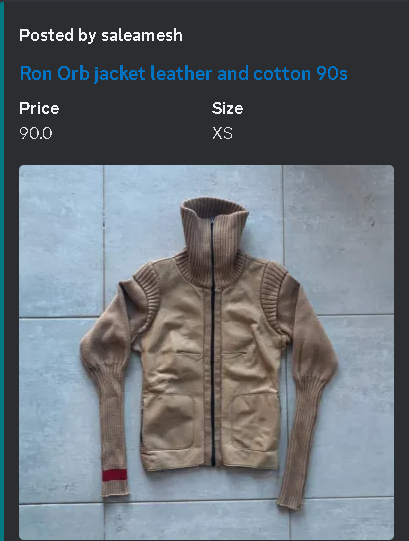

As re-commerce matures, finding rare vintage pieces is shifting away from being ‘in-the-know’ towards being ‘obsessed-with-checking’. In hopes of gaining an edge over a growing number of hawk-eyed collectors and resellers, I coded a program that automates online secondhand shopping.

The development process started with figuring out how to extract item data from marketplace listings. Since collecting data from these platforms is technically prohibited, I definitely did not do the following:
- Use OAuth tokens to interact with each platform’s API by mimicking a legitimate mobile client request and then set the logic for URL search querying
- Create a scraping function to extract new listings from marketplaces and filter them based on specific parameters
I also had to determine how to generate appropriate alerts from a database that was constantly queried and updated. Using a pre-built Python library called hikari, I developed a system to parse item data and generate formatted embeds as Discord messages.

Finally, I set up a Discord bot that was integrated with the rest of my program, capable of responding to preset user commands and managing alerts, all through the Discord API.

A special thanks to talented developers who made requests, hikari, lightbulb, dataset, typing and asyncio.